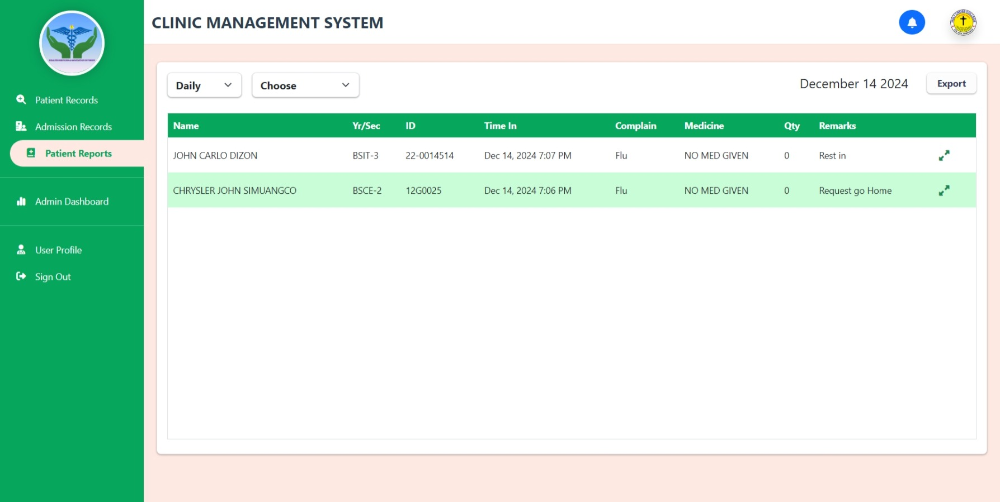
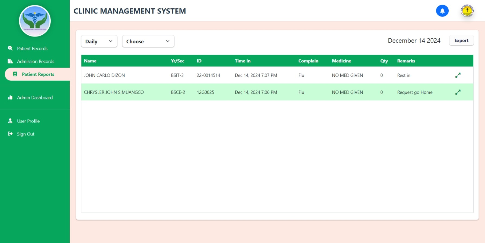

Joseph Lee Basilio
Data Analyst
Email: basiliojoseph550@gmail.com
Phone: (101) 87-1000
Website: www.dataSep.com
Professional Summary
As a highly analytical and results-oriented Data Analyst with [Number] years of experience in the IT industry, I possess a strong foundation in data mining, statistical analysis, and data visualization. I excel at collecting, cleaning, and transforming large datasets into meaningful insights that drive informed decision-making. My expertise includes [List 2-3 key skills e.g., SQL, Python, Tableau/Power BI] and I am proficient in developing and implementing data-driven solutions to optimize business processes and improve overall performance. I am a highly motivated and collaborative team player with a passion for uncovering hidden patterns and delivering impactful data-driven recommendations.
Work Experience
Data Analyst | IT Company for 3 years
January 2027 - Present
- Developed and implemented a new customer segmentation model that increased targeted marketing campaign effectiveness by 15%, leading to a 10% rise in customer acquisition.
- Identified and analyzed key performance indicators (KPIs) related to website traffic and user behavior, leading to the optimization of website design and a 20% increase in user engagement.
- Presented data-driven insights to senior management in a clear and concise manner, influencing key business decisions and contributing to the successful launch of a new product line.
Education
Bachelor of Science in Information Technology
Holy Cross College, 2022 - 2026
Skills
- Programming Language: PHP, Python, JavaScript, C#, C++,Java
- Frameworks: CodeIgniter 4, Bootstrap 5, ExpressJS, ReactJs, React Native, tailwind Css
- Database: SQL
- Projects: School Base Project System (Web and Applications)
Contact
Facebook: Joseph Lee Basilio
Email: basiliojoseph550@gmail.com
Git: basilio-joseph-lee
Portfolio
Here is one of the project I have worked on:


 
